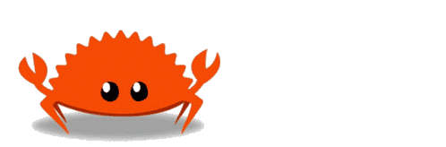

Rodrigo Soares
If a body C, be in thermal equilibrium with two other bodies, A and B, then A and B are in thermal equilibrium with one another.I built this game using Rust and compiled in WASM.
Use qwe/asd keys to hit the gophers.


copyright © rodrigombsoares